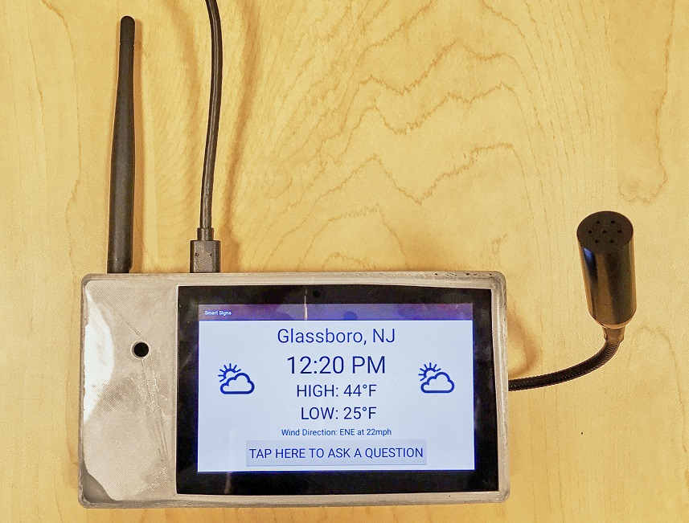
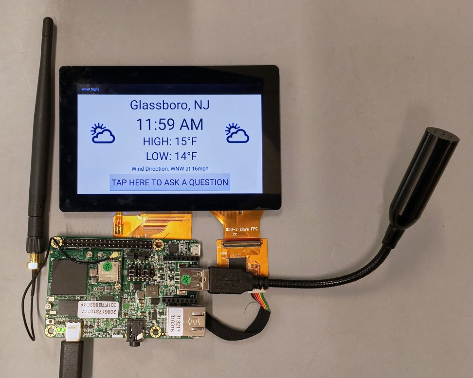

Indoor Navigation with Android Things and the Google Assistant
 Navigating indoors isn't easy, especially when you're in a new place. While traditional signs can be helpful, they aren't able to provide custom information to users. Most digital signs aren't much better, they can be confusing and difficult to use when the information on their screens is quickly changing. The Smart Sign aims to solve this problem by being voice-forward. By extending the Google Assistant, the Smart Sign can address each user's individual needs. The Smart Sign can be tailored to any building because it uses custom-built commands to give directions to users within a building.
Just tap the screen and ask the Smart Sign a question. It's that easy!
The Google Assistant's natural language processing makes answering questions a breeze.
The Smart Sign's idle screen shows the weather, time, and location.
Custom commands can easily be written to adapt the Smart Sign to nearly any situation.
 After alpha testing of the Smart Sign was completed, my team and I authored a paper about the device. It was published at the 2019 IEEE Sensors Applications in mid-March in Sophia Antipolis, France. One of my coauthors presented the paper at the conference..